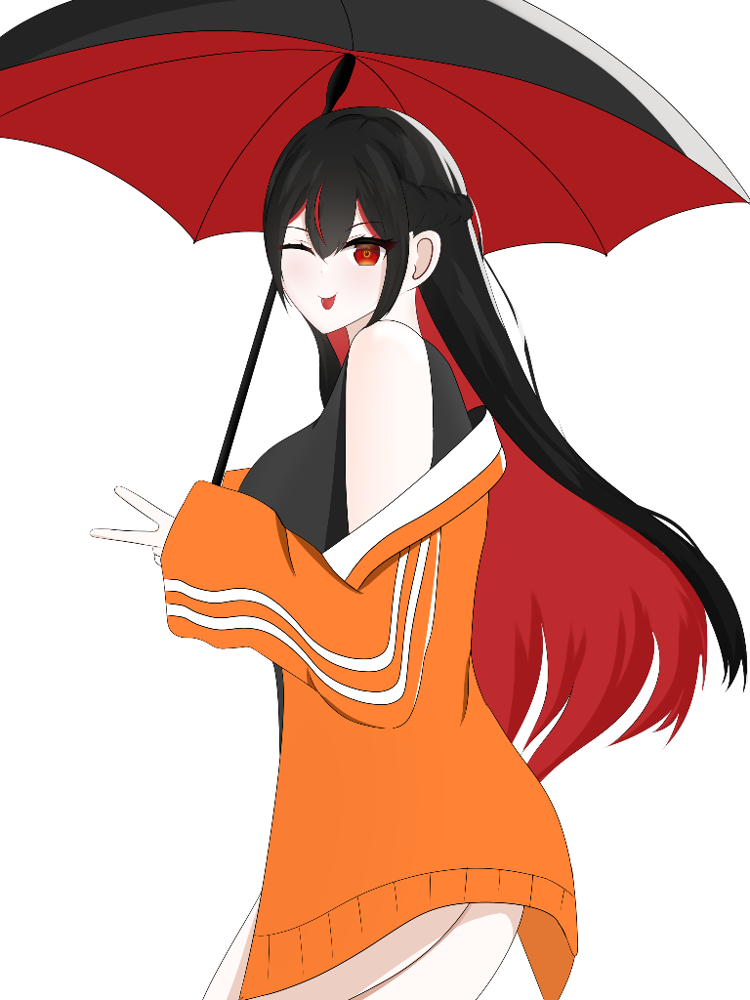

Divya Peashy
Sudut hening tempat kita pulang, merawat tawa dan hangatnya sebuah nama abadi.
Ucapan untuk Dipi
"Idaman semua orang." Yakali gak idaman orang RGB. Senyumnya manis, suaranya lembut, merdu, orangnya energik, ceria, bener-bener sempurna. Oh iya, aku, Zaphyna mengucapkan happy birthday untuk Divya Peashy, and thank you.
0:00
